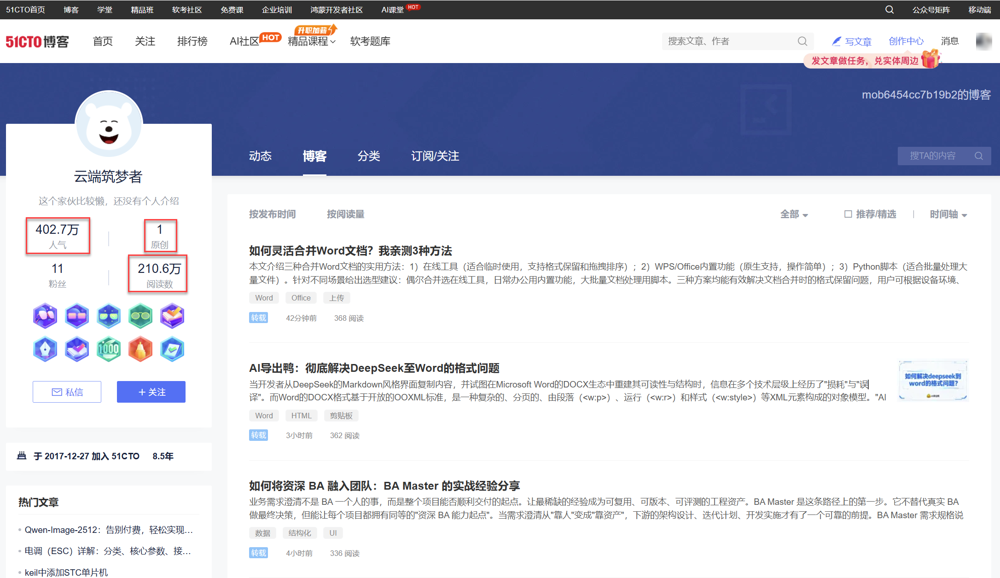
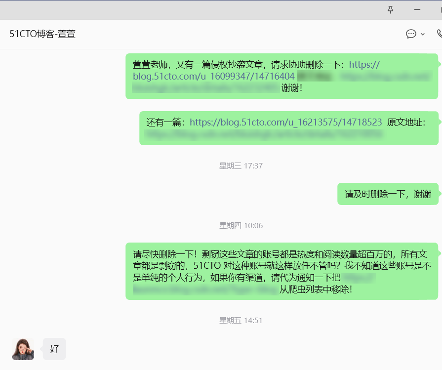
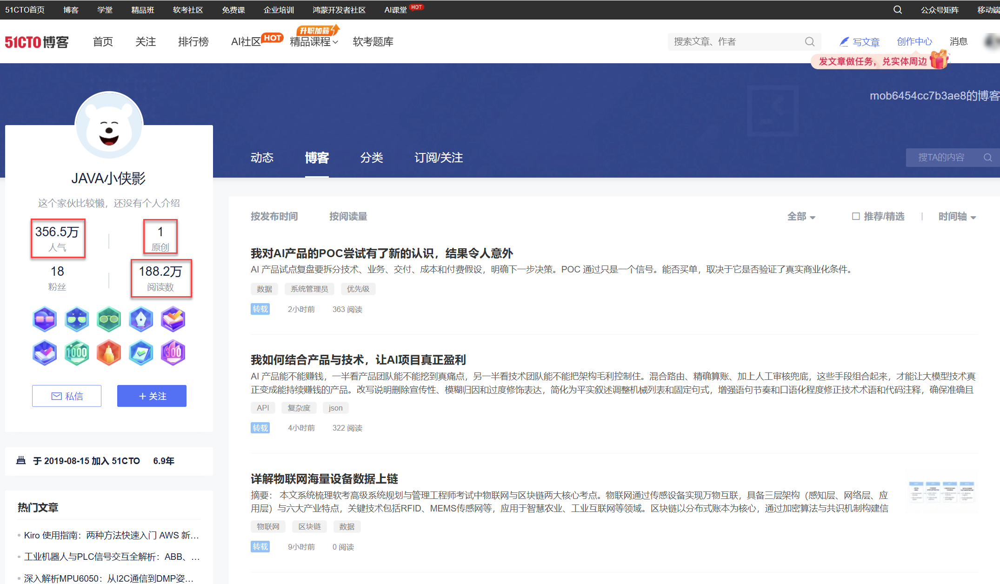
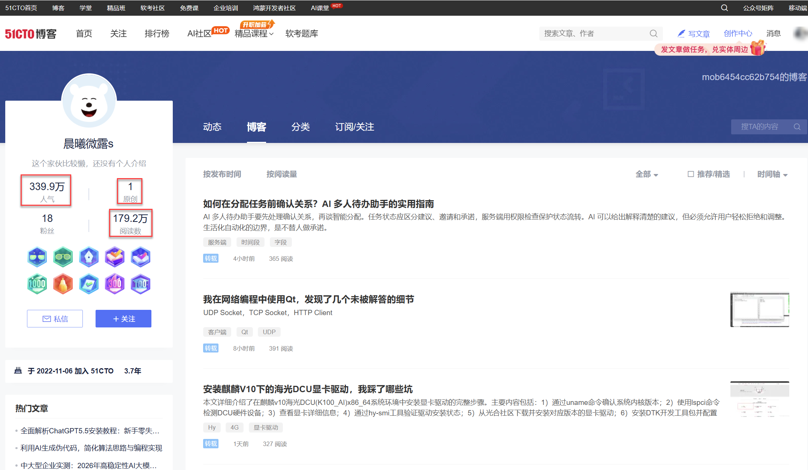
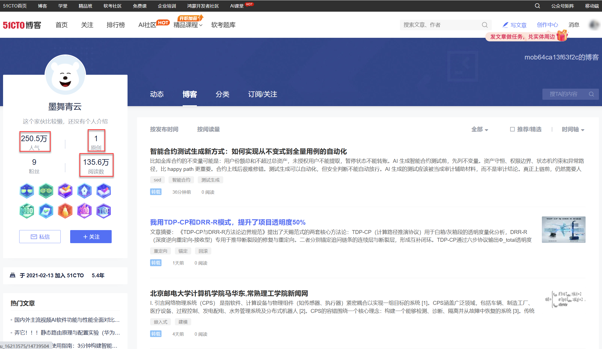

51CTO，一个抄袭剽窃的流氓网站！

今天不聊技术，聊聊最近遇到的糟心事。对于内容创作者来说，文章被剽窃抄袭是很难避免的，很多创作者早期遇到这类问题时会很愤怒并积极地维权，但久了之后，就会感到深深地无奈，因为维权的成本太高，而剽窃又太容易，屡禁不止之后，很多人就放弃了创作。
其实，这两年随着 AI 技术的崛起，在科技领域，很多技术内容网站都在急速衰退。过去，通过搜索引擎找到相关主题的文章再点开阅读是很多技术内容网站的主要流量入口，现在，人们遇到问题时，想到的是 DeepSeek、 豆包 、ChatGPT，不会再去网上扒文章了，这导致这些网站的流量迅速“枯竭”。就是在这样一种颠覆性变革的当口，我看到一些网站迫于生存压力，也顾不上原来的体面，开始肆无忌惮地剽窃其他站点的内容了。今天，就跟大家扒一扒 51CTO 这个流氓网站。事情是这样的，最近我意外在 51CTO 上看到了自己近期发布的一篇文章《深入理解 Rust 生命周期（可能是全网最透彻的解读了）》，这是我公众号原文的部分截图：
下面是 51CTO 上的盗用文章的部分截图，这篇文章的内容与我的原文完全一致，但改写了文章标题（这是我用我的原文标题搜索不到这篇盗用文章的原因），并在开头插入了 51CTO 自己的卖课广告：
发现这个问题后，我联系到了 51CTO 的客服，要求她删除这篇文章，等待了几个小时后，客服才回复我说给处理掉了。说实话，当时只以为是单个账号的“个人行为”，人家给处理了，这事也就过去了。但是，这种改动原文标题的行为给我提了一个醒，过去靠检索文章标题发现盗用文章的方法是有漏洞的，于是，我打开 51CTO 的站内搜索，用我们近期几篇文章的关键字去搜索，才吃惊地发现我的所有文章全部被盗用了。为了节约篇幅，我就不一一列举了，实际上，也根本不需要列举，因为，只要稍微研究一下这些剽窃账号，你就能发现 51CTO 的“猫腻”！我们以剽窃我那篇文章的账号“云端筑梦者”（https://blog.51cto.com/u_16099346）为例:

这个账号的所有文章全部为剽窃内容，以我截图时的前三篇文章为例，它们的原始出处分别为：
-
《如何灵活合并Word文档？我亲测3种方法》（https://blog.51cto.com/u_16099346/14745016）：原文《Word文档合并的几种实用方法：从在线工具到脚本批量处理》（https://blog.csdn.net/qq_42215257/article/details/162664031）
-
《AI导出鸭：彻底解决DeepSeek至Word的格式问题》（https://blog.51cto.com/u_16099346/14744748）：原文《如何解决deepseek到word的格式问题？深入技术核心与“AI 导出鸭”App的工程化解法》（https://blog.csdn.net/yuhulkjv335/article/details/162398214）
-
《如何将资深 BA 融入团队：BA Master 的实战经验分享》（https://blog.51cto.com/u_16099346/14744563）：原文《把资深 BA 装进团队：BA Master 工程化实战手册》（https://blog.csdn.net/weixin_38688012/article/details/162651768）
尽管这个账号标记了文章均为转载，但文章既未注明出处，更不会征得原作者的同意（我就从未被通知过），这个账号说白了，就是一个彻彻底底的搜刮网文的爬虫账号。如是大家想自己验证一下，也很容易，你可以打开这个账号下的任意一篇文章，不要使用文章标题搜索，跳过开头的广告文字，使用正文的第一段文字去搜索，很容易就能找到原始的出处，这些文章无外乎来自于 CSDN、掘金、知乎等知名的科技网站，还有的是来自于公众号。
如果你反驳说：我只列举了一个账号，这只能说明这是单个账号的问题，并不代表 51CTO 官方的行为。最初，我也是这样想的，但是，单就这一个账号来说，它已经注册了 8 年，累积了 210 万的阅读量，我不相信此前没有原创作者举报过，51CTO 不可能不知道这是一个专门盗用他人文章的账号。此外，我还直接通知了 51CTO 的客服，希望他们能采取一些措施，但没有看到任何实际行动，并且所有的要求都要等两到三天才会收到回复：

回到剽窃账号的问题上，前面我提到过，在追踪我自己的文章被盗用的过程中，我发现了 51CTO 真正的“猫腻”。首先，类似上面的账号不是一个，而是一堆，究竟有多少，外人无从知晓，下面这些账号是在追查我自己的原创文章过程中发现的：
这里给大家截取其中几个账号的主页看一下：



它们和前面提到的那个账号有着非常一致的特征：所有账号都是所谓的“转载”文章（没有原创文章），阅读量全部超百万，而且注册时间都至少超过两年， 最妙的地方在于：这些账号并不会重复盗用同一个博客或公众号的全部文章，而是分摊到了多个账号中 ，就仿佛这些账号“商量”好了一样：今天这篇放在你那里，明天那篇放到我这里，这像极了爬虫系统中的任务调度，既能防止原创者通过一篇文章找到账号后发现自己所有被剽窃的文章，又增加了整个爬虫系统的“抗风险”性（不把鸡蛋放在一个篮子里）。 综合这些迹象可以看出：这些账号绝非是单个账号的个人行为，否则无法解释这些巧合，而 51CTO 的长期不作为，更让人不得不怀疑这就是他们自己搞的“小动作”，再加上所有剽窃文章的头尾都贴上了 51CTO 自己卖课的小广告，我想答案已经不言自明了 。
像 51CTO 这种过去还算体面的网站现在这样肆意妄为地公然剽窃真是让人气愤，并且你能看出他们是有多么得“鸡贼”，他们的剽窃行为有这样几个“特点”：
1. 篡改原文标题，让原创作者很难发现文章被盗用；
2. 多账号分散盗用同一博客或公众号的文章，增加隐秘性并规避风险；
3. 在盗取的原文上给自家的课程打小广告，借别人创作的优质内容为自己引流；
4. 抄袭的账号无任何原创文章，都是爬虫支配的僵尸号，一眼就可以认出。
最后，聊一点个人感慨吧，在科技内容创作这一块，几乎没有人是靠这个来谋生的，大部分人都是出于爱好或者学习和写作习惯去创作的，抄袭和剽窃对原创作者的积极性打击很大，这个问题从来就没有根除过，而现在随着 AI 技术的崛起，过去的一些科技类网站的流量在锐减，创作者的创作意愿就更低了，在这种时候，51CTO 表现出来的更像是一种垂死挣扎前的歇斯底里。不知道再过几年，传统科技类网站和技术内容创作的生态是否还会存在，如果存在，又会被 AI 改变成什么样子…
51CTO，一个抄袭剽窃的流氓网站！